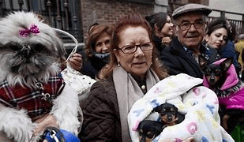
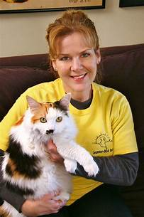
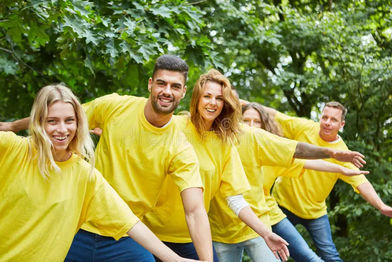
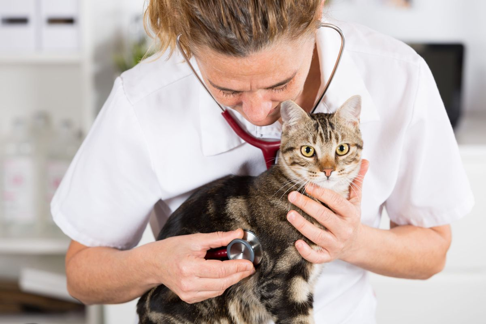
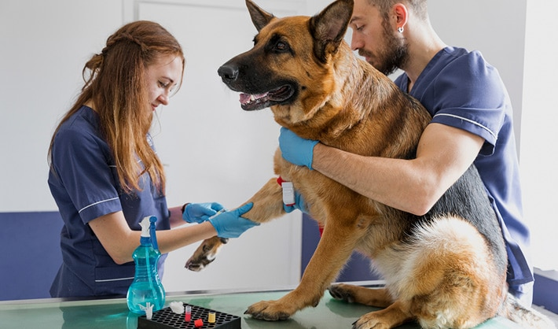

Quienes somos
El Hogar Miau Guau fue creado por un grupo de personas enamorados de los animales, con la sana intención de dar un lugar temporal, a perros y gatos que se encuentran abandonados e indefensos, en la via pública, un situación creciente, y propiciar su adopción.
Quienes trabajan
Los integrantes del hogar son atendidos por un grupo de voluntarios llenos de amor, que se entregan enteramente a ellos. La salud de los integrantes es cuidada por un equipo de profesionales veterinarios y de estudiantes de veterinaria, que realizan sus primeras armas.
   Como nos sostenemos
El Hogar obtiene sus recursos, de la venta de alimentos y accesorios para animales, donados por empresas colaboradoras amigas, de las donaciones y de recaudaciones de fondos, de personas desinteresadas y de fuentes privadas comprometidas con la defensa de los derechos de los animales.